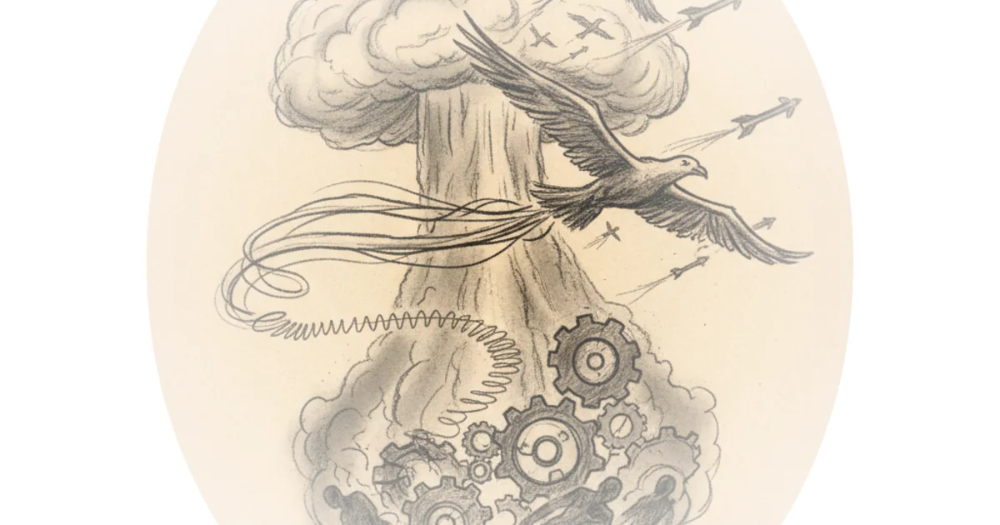

Foreign Policy
← All topics

The battle of pokrovsk, China's plan for long-term confrontation and China cranky at Japan: The big…


![How to save the world from a fascist takeover [kkf longread]](../../../../images/f966fda6-caf9-447d-8308-4bb7774d52fb.webp)
Algeria & the African arms race you've (probably) never heard of - surging budgets & Russian weapons


